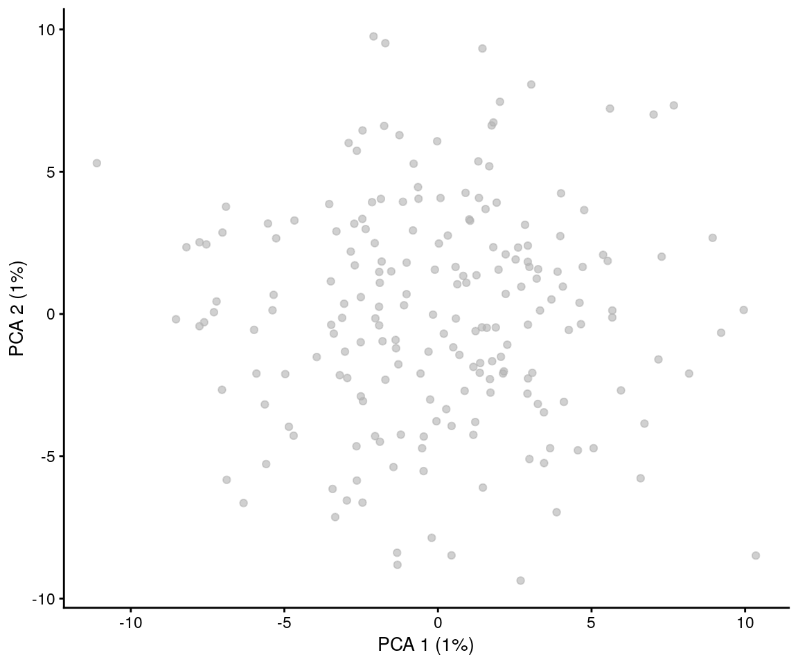
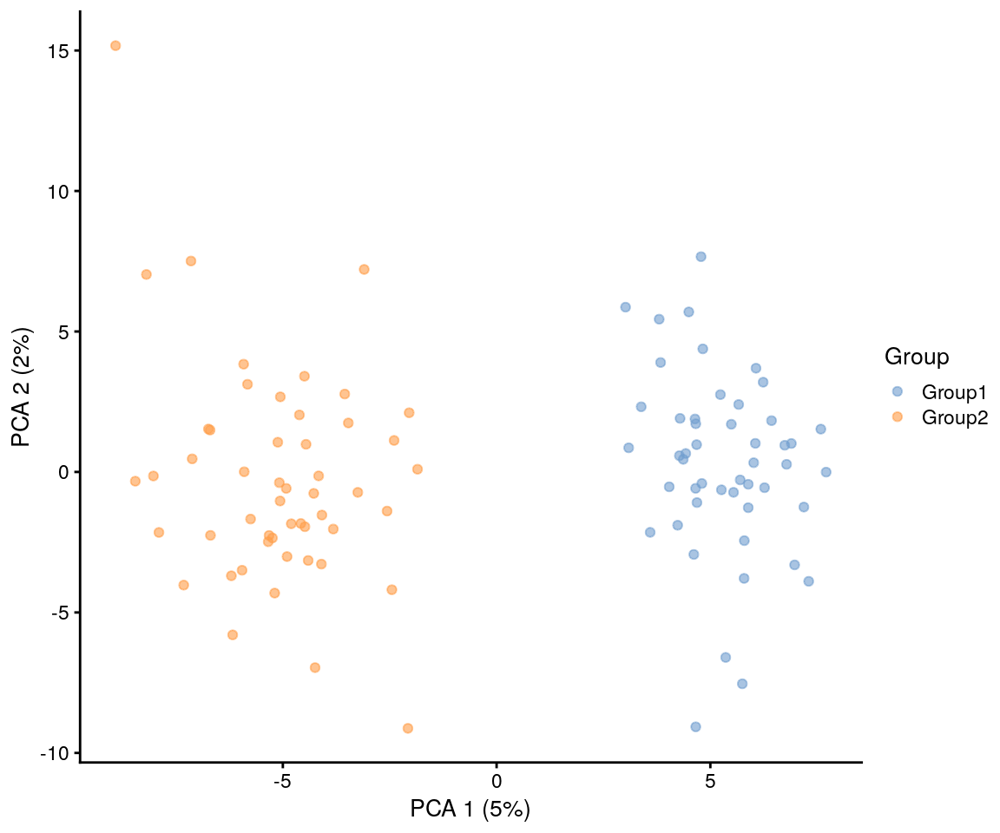
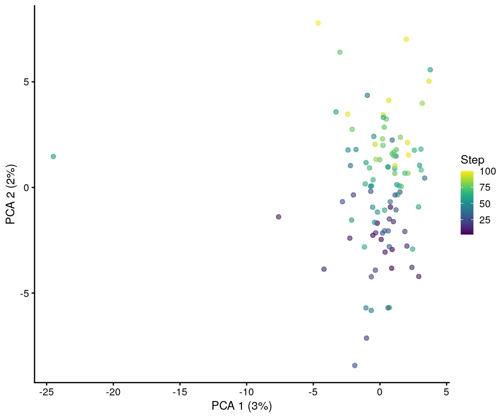
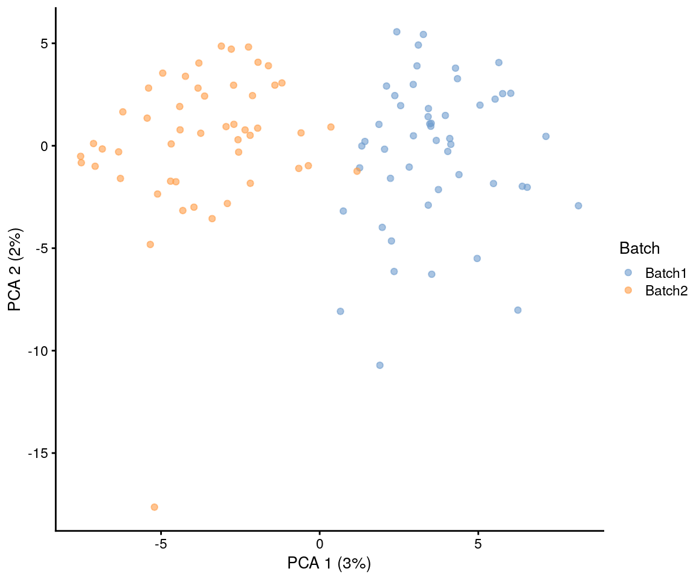
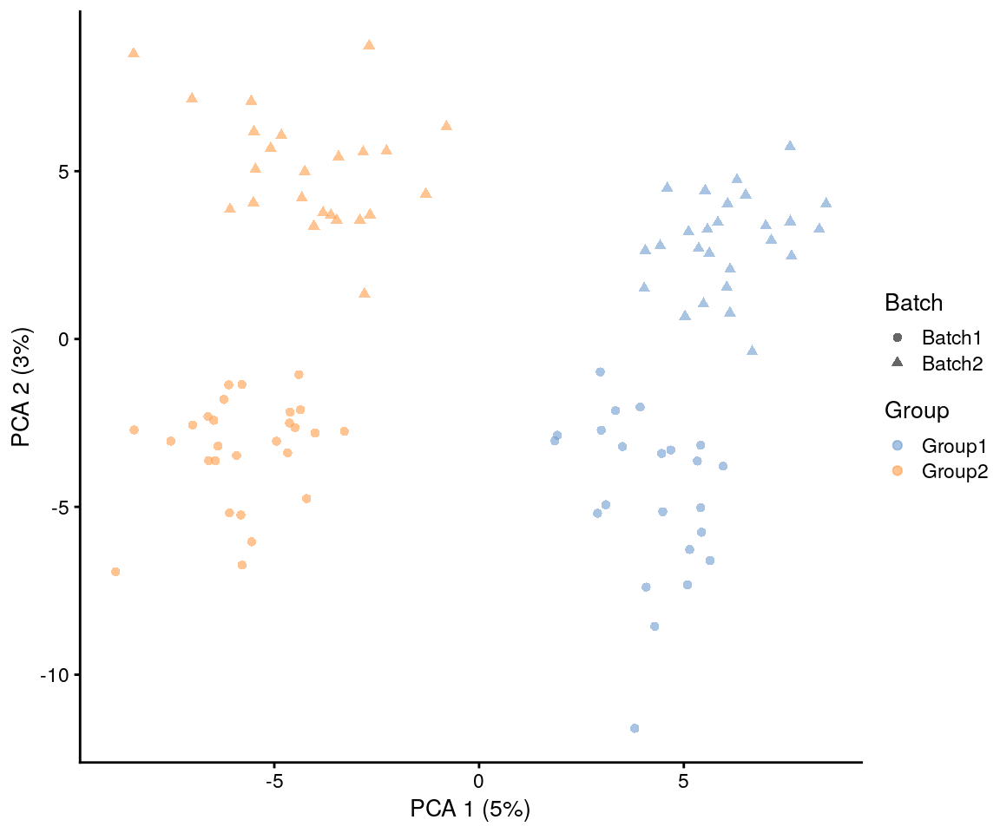
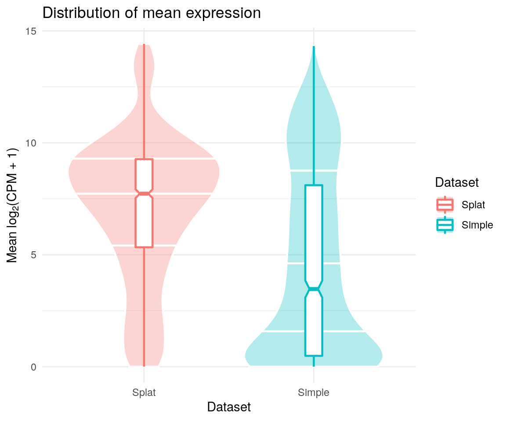
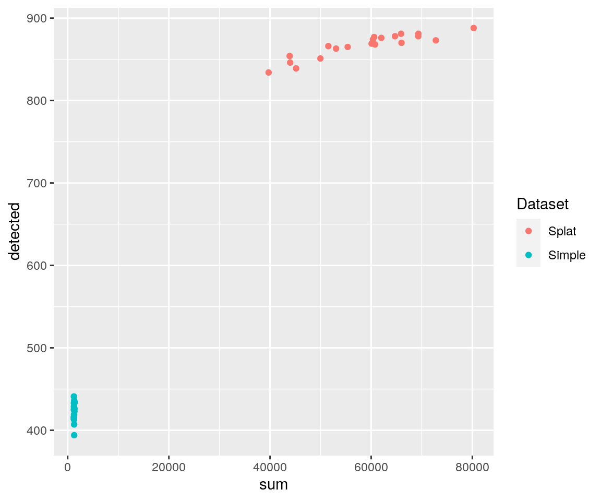
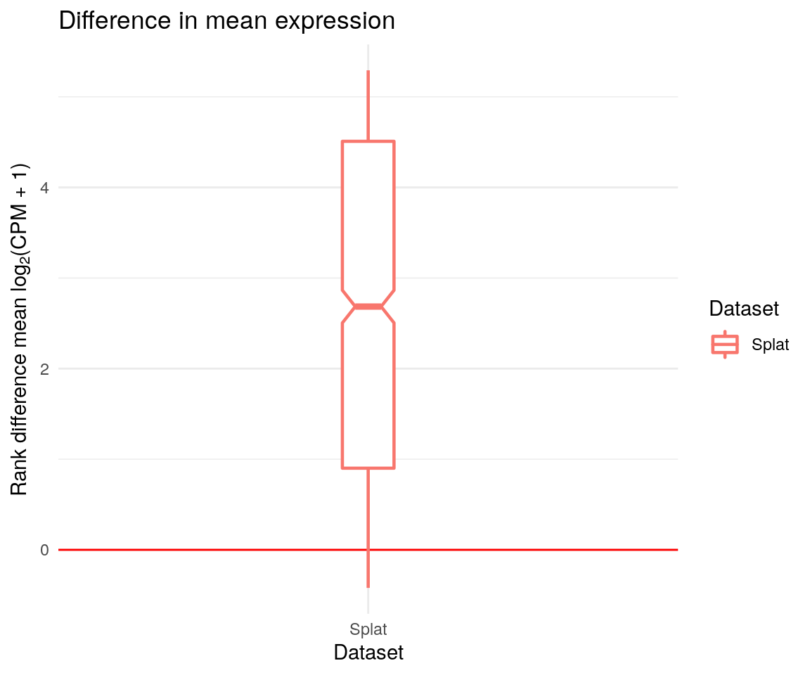

Splatter logo
Welcome to Splatter! Splatter is an R package for the simple simulation of single-cell RNA sequencing data. This vignette gives an overview and introduction to Splatter’s functionality.
Installation
Splatter can be installed from Bioconductor:
if (!requireNamespace("BiocManager", quietly=TRUE)) install.packages("BiocManager") BiocManager::install("splatter")
To install the most recent development version from Github use:
BiocManager::install("Oshlack/splatter", dependencies = TRUE, build_vignettes = TRUE)
Quickstart
Assuming you already have a matrix of count data similar to that you wish to simulate there are two simple steps to creating a simulated data set with Splatter. Here is an example a mock dataset generated with the scater package:
## Loading required package: SingleCellExperiment## Loading required package: SummarizedExperiment## Loading required package: GenomicRanges## Loading required package: stats4## Loading required package: BiocGenerics## Loading required package: parallel##
## Attaching package: 'BiocGenerics'## The following objects are masked from 'package:parallel':
##
## clusterApply, clusterApplyLB, clusterCall, clusterEvalQ,
## clusterExport, clusterMap, parApply, parCapply, parLapply,
## parLapplyLB, parRapply, parSapply, parSapplyLB## The following objects are masked from 'package:stats':
##
## IQR, mad, sd, var, xtabs## The following objects are masked from 'package:base':
##
## anyDuplicated, append, as.data.frame, basename, cbind, colnames,
## dirname, do.call, duplicated, eval, evalq, Filter, Find, get, grep,
## grepl, intersect, is.unsorted, lapply, Map, mapply, match, mget,
## order, paste, pmax, pmax.int, pmin, pmin.int, Position, rank,
## rbind, Reduce, rownames, sapply, setdiff, sort, table, tapply,
## union, unique, unsplit, which.max, which.min## Loading required package: S4Vectors##
## Attaching package: 'S4Vectors'## The following object is masked from 'package:base':
##
## expand.grid## Loading required package: IRanges## Loading required package: GenomeInfoDb## Loading required package: Biobase## Welcome to Bioconductor
##
## Vignettes contain introductory material; view with
## 'browseVignettes()'. To cite Bioconductor, see
## 'citation("Biobase")', and for packages 'citation("pkgname")'.## Loading required package: DelayedArray## Loading required package: Matrix##
## Attaching package: 'Matrix'## The following object is masked from 'package:S4Vectors':
##
## expand## Loading required package: matrixStats##
## Attaching package: 'matrixStats'## The following objects are masked from 'package:Biobase':
##
## anyMissing, rowMedians##
## Attaching package: 'DelayedArray'## The following objects are masked from 'package:matrixStats':
##
## colMaxs, colMins, colRanges, rowMaxs, rowMins, rowRanges## The following objects are masked from 'package:base':
##
## aperm, apply, rowsum## Loading required package: ggplot2set.seed(1) sce <- mockSCE() # Estimate parameters from mock data params <- splatEstimate(sce)
## NOTE: Library sizes have been found to be normally distributed instead of log-normal. You may want to check this is correct.# Simulate data using estimated parameters sim <- splatSimulate(params)
## Getting parameters...## Creating simulation object...## Simulating library sizes...## Simulating gene means...## Simulating BCV...## Simulating counts...## Simulating dropout (if needed)...## Done!These steps will be explained in detail in the following sections but briefly the first step takes a dataset and estimates simulation parameters from it and the second step takes those parameters and simulates a new dataset.
The Splat simulation
Before we look at how we estimate parameters let’s first look at how Splatter simulates data and what those parameters are. We use the term ‘Splat’ to refer to the Splatter’s own simulation and differentiate it from the package itself. The core of the Splat model is a gamma-Poisson distribution used to generate a gene by cell matrix of counts. Mean expression levels for each gene are simulated from a gamma distribution and the Biological Coefficient of Variation is used to enforce a mean-variance trend before counts are simulated from a Poisson distribution. Splat also allows you to simulate expression outlier genes (genes with mean expression outside the gamma distribution) and dropout (random knock out of counts based on mean expression). Each cell is given an expected library size (simulated from a log-normal distribution) that makes it easier to match to a given dataset.
Splat can also simulate differential expression between groups of different types of cells or differentiation paths between different cells types where expression changes in a continuous way. These are described further in the simulating counts section.
The SplatParams object
All the parameters for the Splat simulation are stored in a SplatParams object. Let’s create a new one and see what it looks like.
params <- newSplatParams() params
## A Params object of class SplatParams
## Parameters can be (estimable) or [not estimable], 'Default' or 'NOT DEFAULT'
## Secondary parameters are usually set during simulation
##
## Global:
## (Genes) (Cells) [Seed]
## 10000 100 121054
##
## 28 additional parameters
##
## Batches:
## [Batches] [Batch Cells] [Location] [Scale]
## 1 100 0.1 0.1
##
## Mean:
## (Rate) (Shape)
## 0.3 0.6
##
## Library size:
## (Location) (Scale) (Norm)
## 11 0.2 FALSE
##
## Exprs outliers:
## (Probability) (Location) (Scale)
## 0.05 4 0.5
##
## Groups:
## [Groups] [Group Probs]
## 1 1
##
## Diff expr:
## [Probability] [Down Prob] [Location] [Scale]
## 0.1 0.5 0.1 0.4
##
## BCV:
## (Common Disp) (DoF)
## 0.1 60
##
## Dropout:
## [Type] (Midpoint) (Shape)
## none 0 -1
##
## Paths:
## [From] [Steps] [Skew] [Non-linear] [Sigma Factor]
## 0 100 0.5 0.1 0.8As well as telling us what type of object we have (“A Params object of class SplatParams”) and showing us the values of the parameter this output gives us some extra information. We can see which parameters can be estimated by the splatEstimate function (those in parentheses), which can’t be estimated (those in brackets) and which have been changed from their default values (those in ALL CAPS). For more details about the parameters of the Splat simulation refer to the Splat parameters vignette.
Getting and setting
If we want to look at a particular parameter, for example the number of genes to simulate, we can extract it using the getParam function:
getParam(params, "nGenes")
## [1] 10000Alternatively, to give a parameter a new value we can use the setParam function:
## [1] 5000If we want to extract multiple parameters (as a list) or set multiple parameters we can use the getParams or setParams functions:
# Set multiple parameters at once (using a list) params <- setParams(params, update = list(nGenes = 8000, mean.rate = 0.5)) # Extract multiple parameters as a list getParams(params, c("nGenes", "mean.rate", "mean.shape"))
## $nGenes
## [1] 8000
##
## $mean.rate
## [1] 0.5
##
## $mean.shape
## [1] 0.6# Set multiple parameters at once (using additional arguments) params <- setParams(params, mean.shape = 0.5, de.prob = 0.2) params
## A Params object of class SplatParams
## Parameters can be (estimable) or [not estimable], 'Default' or 'NOT DEFAULT'
## Secondary parameters are usually set during simulation
##
## Global:
## (GENES) (Cells) [Seed]
## 8000 100 121054
##
## 28 additional parameters
##
## Batches:
## [Batches] [Batch Cells] [Location] [Scale]
## 1 100 0.1 0.1
##
## Mean:
## (RATE) (SHAPE)
## 0.5 0.5
##
## Library size:
## (Location) (Scale) (Norm)
## 11 0.2 FALSE
##
## Exprs outliers:
## (Probability) (Location) (Scale)
## 0.05 4 0.5
##
## Groups:
## [Groups] [Group Probs]
## 1 1
##
## Diff expr:
## [PROBABILITY] [Down Prob] [Location] [Scale]
## 0.2 0.5 0.1 0.4
##
## BCV:
## (Common Disp) (DoF)
## 0.1 60
##
## Dropout:
## [Type] (Midpoint) (Shape)
## none 0 -1
##
## Paths:
## [From] [Steps] [Skew] [Non-linear] [Sigma Factor]
## 0 100 0.5 0.1 0.8The parameters with have changed are now shown in ALL CAPS to indicate that they been changed form the default.
We can also set parameters directly when we call newSplatParams:
params <- newSplatParams(lib.loc = 12, lib.scale = 0.6) getParams(params, c("lib.loc", "lib.scale"))
## $lib.loc
## [1] 12
##
## $lib.scale
## [1] 0.6Estimating parameters
Splat allows you to estimate many of it’s parameters from a data set containing counts using the splatEstimate function.
# Get the mock counts matrix counts <- counts(sce) # Check that counts is an integer matrix class(counts)
## [1] "matrix" "array"typeof(counts)
## [1] "double"# Check the dimensions, each row is a gene, each column is a cell dim(counts)
## [1] 2000 200# Show the first few entries counts[1:5, 1:5]
## Cell_001 Cell_002 Cell_003 Cell_004 Cell_005
## Gene_0001 0 5 7 276 50
## Gene_0002 12 0 0 0 0
## Gene_0003 97 292 58 64 541
## Gene_0004 0 0 0 170 19
## Gene_0005 105 123 174 565 1061params <- splatEstimate(counts)
## NOTE: Library sizes have been found to be normally distributed instead of log-normal. You may want to check this is correct.Here we estimated parameters from a counts matrix but splatEstimate can also take a SingleCellExperiment object. The estimation process has the following steps:
- Mean parameters are estimated by fitting a gamma distribution to the mean expression levels.
- Library size parameters are estimated by fitting a log-normal distribution to the library sizes.
- Expression outlier parameters are estimated by determining the number of outliers and fitting a log-normal distribution to their difference from the median.
- BCV parameters are estimated using the
estimateDispfunction from theedgeRpackage. - Dropout parameters are estimated by checking if dropout is present and fitting a logistic function to the relationship between mean expression and proportion of zeros.
For more details of the estimation procedures see ?splatEstimate.
Simulating counts
Once we have a set of parameters we are happy with we can use splatSimulate to simulate counts. If we want to make small adjustments to the parameters we can provide them as additional arguments, alternatively if we don’t supply any parameters the defaults will be used:
sim <- splatSimulate(params, nGenes = 1000)
## Getting parameters...## Creating simulation object...## Simulating library sizes...## Simulating gene means...## Simulating BCV...## Simulating counts...## Simulating dropout (if needed)...## Done!
sim
## class: SingleCellExperiment
## dim: 1000 200
## metadata(1): Params
## assays(6): BatchCellMeans BaseCellMeans ... TrueCounts counts
## rownames(1000): Gene1 Gene2 ... Gene999 Gene1000
## rowData names(4): Gene BaseGeneMean OutlierFactor GeneMean
## colnames(200): Cell1 Cell2 ... Cell199 Cell200
## colData names(3): Cell Batch ExpLibSize
## reducedDimNames(0):
## altExpNames(0):Looking at the output of splatSimulate we can see that sim is SingleCellExperiment object with 1000 features (genes) and 200 samples (cells). The main part of this object is a features by samples matrix containing the simulated counts (accessed using counts), although it can also hold other expression measures such as FPKM or TPM. Additionally a SingleCellExperiment contains phenotype information about each cell (accessed using colData) and feature information about each gene (accessed using rowData). Splatter uses these slots, as well as assays, to store information about the intermediate values of the simulation.
# Access the counts counts(sim)[1:5, 1:5]
## Cell1 Cell2 Cell3 Cell4 Cell5
## Gene1 2803 7799 128 1467 1177
## Gene2 748 56 158 431 878
## Gene3 23 14 0 14 0
## Gene4 50 1 39 69 170
## Gene5 1128 577 870 204 1410# Information about genes head(rowData(sim))
## DataFrame with 6 rows and 4 columns
## Gene BaseGeneMean OutlierFactor GeneMean
## <character> <numeric> <numeric> <numeric>
## Gene1 Gene1 939.23747 1 939.23747
## Gene2 Gene2 203.60925 1 203.60925
## Gene3 Gene3 2.24281 1 2.24281
## Gene4 Gene4 17.62236 1 17.62236
## Gene5 Gene5 369.72780 1 369.72780
## Gene6 Gene6 66.21670 1 66.21670# Information about cells head(colData(sim))
## DataFrame with 6 rows and 3 columns
## Cell Batch ExpLibSize
## <character> <character> <numeric>
## Cell1 Cell1 Batch1 353497
## Cell2 Cell2 Batch1 358729
## Cell3 Cell3 Batch1 349884
## Cell4 Cell4 Batch1 367861
## Cell5 Cell5 Batch1 366083
## Cell6 Cell6 Batch1 363629# Gene by cell matrices names(assays(sim))
## [1] "BatchCellMeans" "BaseCellMeans" "BCV" "CellMeans"
## [5] "TrueCounts" "counts"# Example of cell means matrix assays(sim)$CellMeans[1:5, 1:5]
## Cell1 Cell2 Cell3 Cell4 Cell5
## Gene1 2859.61678 7931.063251 141.41041319 1452.355124 1.212197e+03
## Gene2 751.42990 51.296292 162.59405245 462.176041 9.106639e+02
## Gene3 23.39887 13.109097 0.05694822 8.839402 7.300158e-02
## Gene4 49.66024 1.827414 32.13648273 62.279860 1.579201e+02
## Gene5 1115.07426 582.986498 892.65931311 173.049967 1.465138e+03An additional (big) advantage of outputting a SingleCellExperiment is that we get immediate access to other analysis packages, such as the plotting functions in scater. For example we can make a PCA plot:
# Use scater to calculate logcounts sim <- logNormCounts(sim) # Plot PCA sim <- runPCA(sim) plotPCA(sim)

(NOTE: Your values and plots may look different as the simulation is random and produces different results each time it is run.)
For more details about the SingleCellExperiment object refer to the [vignette] SCE-vignette. For information about what you can do with scater refer to the scater documentation and vignette.
The splatSimulate function outputs the following additional information about the simulation:
-
Cell information (
colData)-
Cell- Unique cell identifier. -
Group- The group or path the cell belongs to. -
ExpLibSize- The expected library size for that cell. -
Step(paths only) - How far along the path each cell is.
-
-
Gene information (
rowData)-
Gene- Unique gene identifier. -
BaseGeneMean- The base expression level for that gene. -
OutlierFactor- Expression outlier factor for that gene (1 is not an outlier). -
GeneMean- Expression level after applying outlier factors. -
DEFac[Group]- The differential expression factor for each gene in a particular group (1 is not differentially expressed). -
GeneMean[Group]- Expression level of a gene in a particular group after applying differential expression factors.
-
-
Gene by cell information (
assays)-
BaseCellMeans- The expression of genes in each cell adjusted for expected library size. -
BCV- The Biological Coefficient of Variation for each gene in each cell. -
CellMeans- The expression level of genes in each cell adjusted for BCV. -
TrueCounts- The simulated counts before dropout. -
Dropout- Logical matrix showing which counts have been dropped in which cells.
-
Values that have been added by Splatter are named using UpperCamelCase to separate them from the underscore_naming used by scater and other packages. For more information on the simulation see ?splatSimulate.
Simulating groups
So far we have only simulated a single population of cells but often we are interested in investigating a mixed population of cells and looking to see what cell types are present or what differences there are between them. Splatter is able to simulate these situations by changing the method argument Here we are going to simulate two groups, by specifying the group.prob parameter and setting the method parameter to "groups":
(NOTE: We have also set the verbose argument to FALSE to stop Splatter printing progress messages.)
sim.groups <- splatSimulate(group.prob = c(0.5, 0.5), method = "groups", verbose = FALSE) sim.groups <- logNormCounts(sim.groups) sim.groups <- runPCA(sim.groups) plotPCA(sim.groups, colour_by = "Group")

As we have set both the group probabilities to 0.5 we should get approximately equal numbers of cells in each group (around 50 in this case). If we wanted uneven groups we could set group.prob to any set of probabilities that sum to 1.
Simulating paths
The other situation that is often of interest is a differentiation process where one cell type is changing into another. Splatter approximates this process by simulating a series of steps between two groups and randomly assigning each cell to a step. We can create this kind of simulation using the "paths" method.
sim.paths <- splatSimulate(de.prob = 0.2, nGenes = 1000, method = "paths", verbose = FALSE) sim.paths <- logNormCounts(sim.paths) sim.paths <- runPCA(sim.paths) plotPCA(sim.paths, colour_by = "Step")

Here the colours represent the “step” of each cell or how far along the differentiation path it is. We can see that the cells with dark colours are more similar to the originating cell type and the light coloured cells are closer to the final, differentiated, cell type. By setting additional parameters it is possible to simulate more complex process (for example multiple mature cell types from a single progenitor).
Batch effects
Another factor that is important in the analysis of any sequencing experiment are batch effects, technical variation that is common to a set of samples processed at the same time. We apply batch effects by telling Splatter how many cells are in each batch:
sim.batches <- splatSimulate(batchCells = c(50, 50), verbose = FALSE) sim.batches <- logNormCounts(sim.batches) sim.batches <- runPCA(sim.batches) plotPCA(sim.batches, colour_by = "Batch")

This looks at lot like when we simulated groups and that is because the process is very similar. The difference is that batch effects are applied to all genes, not just those that are differentially expressed, and the effects are usually smaller. By combining groups and batches we can simulate both unwanted variation that we aren’t interested in (batch) and the wanted variation we are looking for (group):
sim.groups <- splatSimulate(batchCells = c(50, 50), group.prob = c(0.5, 0.5), method = "groups", verbose = FALSE) sim.groups <- logNormCounts(sim.groups) sim.groups <- runPCA(sim.groups) plotPCA(sim.groups, shape_by = "Batch", colour_by = "Group")

Here we see that the effects of the group (first component) are stronger than the batch effects (second component) but by adjusting the parameters we could made the batch effects dominate.
Convenience functions
Each of the Splatter simulation methods has it’s own convenience function. To simulate a single population use splatSimulateSingle() (equivalent to splatSimulate(method = "single")), to simulate groups use splatSimulateGroups() (equivalent to splatSimulate(method = "groups")) or to simulate paths use splatSimulatePaths() (equivalent to splatSimulate(method = "paths")).
Other simulations
As well as it’s own Splat simulation method the Splatter package contains implementations of other single-cell RNA-seq simulations that have been published or wrappers around simulations included in other packages. To see all the available simulations run the listSims() function:
listSims()
## Splatter currently contains 14 simulations
##
## Splat (splat)
## DOI: 10.1186/s13059-017-1305-0 GitHub: Oshlack/splatter
## The Splat simulation generates means from a gamma distribution, adjusts them for BCV and generates counts from a gamma-poisson. Dropout and batch effects can be optionally added.
##
## Splat Single (splatSingle)
## DOI: 10.1186/s13059-017-1305-0 GitHub: Oshlack/splatter
## The Splat simulation with a single population.
##
## Splat Groups (splatGroups)
## DOI: 10.1186/s13059-017-1305-0 GitHub: Oshlack/splatter
## The Splat simulation with multiple groups. Each group can have it's own differential expression probability and fold change distribution.
##
## Splat Paths (splatPaths)
## DOI: 10.1186/s13059-017-1305-0 GitHub: Oshlack/splatter
## The Splat simulation with differentiation paths. Each path can have it's own length, skew and probability. Genes can change in non-linear ways.
##
## Kersplat (kersplat)
## DOI: GitHub: Oshlack/splatter
## The Kersplat simulation extends the Splat model by adding a gene network, more complex cell structure, doublets and empty cells (Experimental).
##
## Simple (simple)
## DOI: 10.1186/s13059-017-1305-0 GitHub: Oshlack/splatter
## A simple simulation with gamma means and negative binomial counts.
##
## Lun (lun)
## DOI: 10.1186/s13059-016-0947-7 GitHub: MarioniLab/Deconvolution2016
## Gamma distributed means and negative binomial counts. Cells are given a size factor and differential expression can be simulated with fixed fold changes.
##
## Lun 2 (lun2)
## DOI: 10.1093/biostatistics/kxw055 GitHub: MarioniLab/PlateEffects2016
## Negative binomial counts where the means and dispersions have been sampled from a real dataset. The core feature of the Lun 2 simulation is the addition of plate effects. Differential expression can be added between two groups of plates and optionally a zero-inflated negative-binomial can be used.
##
## scDD (scDD)
## DOI: 10.1186/s13059-016-1077-y GitHub: kdkorthauer/scDD
## The scDD simulation samples a given dataset and can simulate differentially expressed and differentially distributed genes between two conditions.
##
## BASiCS (BASiCS)
## DOI: 10.1371/journal.pcbi.1004333 GitHub: catavallejos/BASiCS
## The BASiCS simulation is based on a bayesian model used to deconvolve biological and technical variation and includes spike-ins and batch effects.
##
## mfa (mfa)
## DOI: 10.12688/wellcomeopenres.11087.1 GitHub: kieranrcampbell/mfa
## The mfa simulation produces a bifurcating pseudotime trajectory. This can optionally include genes with transient changes in expression and added dropout.
##
## PhenoPath (pheno)
## DOI: 10.1101/159913 GitHub: kieranrcampbell/phenopath
## The PhenoPath simulation produces a pseudotime trajectory with different types of genes.
##
## ZINB-WaVE (zinb)
## DOI: 10.1101/125112 GitHub: drisso/zinbwave
## The ZINB-WaVE simulation simulates counts from a sophisticated zero-inflated negative-binomial distribution including cell and gene-level covariates.
##
## SparseDC (sparseDC)
## DOI: 10.1093/nar/gkx1113 GitHub: cran/SparseDC
## The SparseDC simulation simulates a set of clusters across two conditions, where some clusters may be present in only one condition.Each simulation has it’s own prefix which gives the name of the functions associated with that simulation. For example the prefix for the simple simulation is simple so it would store it’s parameters in a SimpleParams object that can be created using newSimpleParams() or estimated from real data using simpleEstimate(). To simulate data using that simulation you would use simpleSimulate(). Each simulation returns a SingleCellExperiment object with intermediate values similar to that returned by splatSimulate(). For more detailed information on each simulation see the appropriate help page (eg. ?simpleSimulate for information on how the simple simulation works or ? lun2Estimate for details of how the Lun 2 simulation estimates parameters) or refer to the appropriate paper or package.
Other expression values
Splatter is designed to simulate count data but some analysis methods expect other expression values, particularly length-normalised values such as TPM or FPKM. The scater package has functions for adding these values to a SingleCellExperiment object but they require a length for each gene. The addGeneLengths function can be used to simulate these lengths:
sim <- simpleSimulate(verbose = FALSE) sim <- addGeneLengths(sim) head(rowData(sim))
## DataFrame with 6 rows and 3 columns
## Gene GeneMean Length
## <character> <numeric> <numeric>
## Gene1 Gene1 0.39274964 4891
## Gene2 Gene2 2.48067014 2804
## Gene3 Gene3 1.96955391 1325
## Gene4 Gene4 0.00337284 2314
## Gene5 Gene5 1.01863282 6135
## Gene6 Gene6 0.05567822 9756We can then use scater to calculate TPM:
tpm(sim) <- calculateTPM(sim, rowData(sim)$Length) tpm(sim)[1:5, 1:5]
## Cell1 Cell2 Cell3 Cell4 Cell5
## Gene1 0.00000 33.58752 0.00000 67.44956 0.0000
## Gene2 59.29454 234.34603 119.46946 235.30372 0.0000
## Gene3 250.96136 123.98232 126.41221 248.97797 506.5349
## Gene4 0.00000 0.00000 0.00000 0.00000 0.0000
## Gene5 81.30166 26.77695 27.30174 0.00000 0.0000The default method used by addGeneLengths to simulate lengths is to generate values from a log-normal distribution which are then rounded to give an integer length. The parameters for this distribution are based on human protein coding genes but can be adjusted if needed (for example for other species). Alternatively lengths can be sampled from a provided vector (see ?addGeneLengths for details and an example).
Comparing simulations and real data
One thing you might like to do after simulating data is to compare it to a real dataset, or compare simulations with different parameters or models. Splatter provides a function compareSCEs that aims to make these comparisons easier. As the name suggests this function takes a list of SingleCellExperiment objects, combines the datasets and produces some plots comparing them. Let’s make two small simulations and see how they compare.
sim1 <- splatSimulate(nGenes = 1000, batchCells = 20, verbose = FALSE) sim2 <- simpleSimulate(nGenes = 1000, nCells = 20, verbose = FALSE) comparison <- compareSCEs(list(Splat = sim1, Simple = sim2)) names(comparison)
## [1] "RowData" "ColData" "Plots"names(comparison$Plots)
## [1] "Means" "Variances" "MeanVar" "LibrarySizes" "ZerosGene"
## [6] "ZerosCell" "MeanZeros" "VarGeneCor"The returned list has three items. The first two are the combined datasets by gene (RowData) and by cell (ColData) and the third contains some comparison plots (produced using ggplot2), for example a plot of the distribution of means:
comparison$Plots$Means

These are only a few of the plots you might want to consider but it should be easy to make more using the returned data. For example, we could plot the number of expressed genes against the library size:
library("ggplot2") ggplot(comparison$ColData, aes(x = sum, y = detected, colour = Dataset)) + geom_point()

Comparing differences
Sometimes instead of visually comparing datasets it may be more interesting to look at the differences between them. We can do this using the diffSCEs function. Similar to compareSCEs this function takes a list of SingleCellExperiment objects but now we also specify one to be a reference. A series of similar plots are returned but instead of showing the overall distributions they demonstrate differences from the reference.

We also get a series of Quantile-Quantile plot that can be used to compare distributions.
difference$QQPlots$Means

Making panels
Each of these comparisons makes several plots which can be a lot to look at. To make this easier, or to produce figures for publications, you can make use of the functions makeCompPanel, makeDiffPanel and makeOverallPanel.
These functions combine the plots into a single panel using the cowplot package. The panels can be quite large and hard to view (for example in RStudio’s plot viewer) so it can be better to output the panels and view them separately. Luckily cowplot provides a convenient function for saving the images. Here are some suggested parameters for outputting each of the panels:
# This code is just an example and is not run panel <- makeCompPanel(comparison) cowplot::save_plot("comp_panel.png", panel, nrow = 4, ncol = 3) panel <- makeDiffPanel(difference) cowplot::save_plot("diff_panel.png", panel, nrow = 3, ncol = 5) panel <- makeOverallPanel(comparison, difference) cowplot::save_plot("overall_panel.png", panel, ncol = 4, nrow = 7)
Citing Splatter
If you use Splatter in your work please cite our paper:
citation("splatter")
##
## Zappia L, Phipson B, Oshlack A. Splatter: Simulation of single-cell
## RNA sequencing data. Genome Biology. 2017;
## doi:10.1186/s13059-017-1305-0
##
## A BibTeX entry for LaTeX users is
##
## @Article{,
## author = {Luke Zappia and Belinda Phipson and Alicia Oshlack},
## title = {Splatter: simulation of single-cell RNA sequencing data},
## journal = {Genome Biology},
## year = {2017},
## url = {http://dx.doi.org/10.1186/s13059-017-1305-0},
## doi = {10.1186/s13059-017-1305-0},
## }Session information
## R version 4.0.2 Patched (2020-09-24 r79253)
## Platform: x86_64-pc-linux-gnu (64-bit)
## Running under: Ubuntu 20.04.1 LTS
##
## Matrix products: default
## BLAS/LAPACK: /usr/lib/x86_64-linux-gnu/openblas-pthread/libopenblasp-r0.3.8.so
##
## locale:
## [1] LC_CTYPE=en_US.UTF-8 LC_NUMERIC=C
## [3] LC_TIME=en_US.UTF-8 LC_COLLATE=en_US.UTF-8
## [5] LC_MONETARY=en_US.UTF-8 LC_MESSAGES=C
## [7] LC_PAPER=en_US.UTF-8 LC_NAME=C
## [9] LC_ADDRESS=C LC_TELEPHONE=C
## [11] LC_MEASUREMENT=en_US.UTF-8 LC_IDENTIFICATION=C
##
## attached base packages:
## [1] parallel stats4 stats graphics grDevices utils datasets
## [8] methods base
##
## other attached packages:
## [1] scater_1.17.5 ggplot2_3.3.2
## [3] splatter_1.13.0 SingleCellExperiment_1.11.7
## [5] SummarizedExperiment_1.19.6 DelayedArray_0.15.9
## [7] matrixStats_0.56.0 Matrix_1.2-18
## [9] Biobase_2.49.1 GenomicRanges_1.41.6
## [11] GenomeInfoDb_1.25.11 IRanges_2.23.10
## [13] S4Vectors_0.27.13 BiocGenerics_0.35.4
## [15] BiocStyle_2.17.1
##
## loaded via a namespace (and not attached):
## [1] bitops_1.0-6 fs_1.5.0
## [3] RColorBrewer_1.1-2 rprojroot_1.3-2
## [5] tools_4.0.2 backports_1.1.10
## [7] R6_2.4.1 irlba_2.3.3
## [9] vipor_0.4.5 colorspace_1.4-1
## [11] withr_2.3.0 sp_1.4-2
## [13] tidyselect_1.1.0 gridExtra_2.3
## [15] compiler_4.0.2 BiocNeighbors_1.7.0
## [17] desc_1.2.0 labeling_0.3
## [19] bookdown_0.20 scales_1.1.1
## [21] checkmate_2.0.0 pkgdown_1.6.1.9000
## [23] systemfonts_0.3.1 stringr_1.4.0
## [25] digest_0.6.25 rmarkdown_2.3
## [27] XVector_0.29.3 pkgconfig_2.0.3
## [29] htmltools_0.5.0 akima_0.6-2.1
## [31] limma_3.45.14 rlang_0.4.7
## [33] DelayedMatrixStats_1.11.1 generics_0.0.2
## [35] farver_2.0.3 BiocParallel_1.23.2
## [37] dplyr_1.0.2 RCurl_1.98-1.2
## [39] magrittr_1.5 BiocSingular_1.5.1
## [41] GenomeInfoDbData_1.2.3 scuttle_0.99.14
## [43] Rcpp_1.0.5 ggbeeswarm_0.6.0
## [45] munsell_0.5.0 viridis_0.5.1
## [47] lifecycle_0.2.0 stringi_1.5.3
## [49] yaml_2.2.1 edgeR_3.31.4
## [51] MASS_7.3-53 zlibbioc_1.35.0
## [53] grid_4.0.2 crayon_1.3.4
## [55] lattice_0.20-41 cowplot_1.1.0
## [57] beachmat_2.5.5 splines_4.0.2
## [59] locfit_1.5-9.4 knitr_1.30
## [61] pillar_1.4.6 glue_1.4.2
## [63] evaluate_0.14 BiocManager_1.30.10
## [65] vctrs_0.3.4 gtable_0.3.0
## [67] purrr_0.3.4 assertthat_0.2.1
## [69] cpp11_0.2.1 xfun_0.17
## [71] rsvd_1.0.3 ragg_0.3.1
## [73] survival_3.2-3 viridisLite_0.3.0
## [75] tibble_3.0.3 beeswarm_0.2.3
## [77] memoise_1.1.0 fitdistrplus_1.1-1
## [79] ellipsis_0.3.1